16 面部中三分之一：颊-颧沟
面部中三分之一的睑颊沟
JANI VAN LOGHEM
16.1 引言
睑颊沟（PMG），又称眼睑-颊交界，位于眶下区域外侧。这是一个具有非常强抗衰老能力的区域，因为矫正PMG可以掩盖衰老的迹象。在衰老过程中，由于骨吸收 [1]，眶周最显著地向内外侧扩大。因此，起源于眶缘的眼轮匝肌韧带（ORL）在衰老过程中被牵拉并朝内外侧方向移动。该韧带从其起源处向下定向，并附着到与皮肤相连的眼轮匝肌上。在ORL下方注射填充剂产品可以将ORL推向更水平的方向，从而减小由ORL附着形成的沟壑。治疗PMG可以减轻骨吸收的证据，因此可以使观察者估计出较低的年龄。治疗该区域的另一个额外优势是其对眼角倾斜度的影响；通过在内外侧眶缘的骨膜上注射羟基磷灰石钙（CaHA），可以实现非手术的眼角塑形。
16.2 安全注意事项
使用针头向PMG注射时，应注意不要一次性注射过多的产品，因为预计会通过针头形成的通道回流，并可能积聚在外侧眶下眼轮匝肌脂肪间隙（SOOF）[2]。当产品回流到更浅的层次时，更有可能发生水肿或产品在受限空间（SOOF）内积聚。Funt 描述了一种在使用锐针同时避免颧部水肿的好技术 [3]。
动脉危险包括颧面动脉、外侧眼睑动脉、横面动脉及其分支，以及下缘皮瓣动脉弓分支（图16.1）。
16.3 睑颊沟钝性套管针技术 1
注射定位，参见图16.2。
16.3.1 分步技术
- 识别并标记ORL的皮肤附着点，并标记眶下缘。应显示该韧带的浅表附着点低于骨性起源。
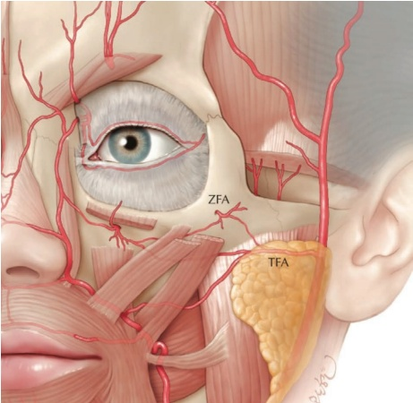
-
在眼轮匝肌皮肤附着点外侧标记进入点，以便钝性套管针可以到达PMG（图16.3）。
-
消毒。考虑在进入点进行颧面神经阻滞和局部麻醉（参见第3章）。
-
用23G锐针制作预孔。
-
使用未稀释的CaHA或标准稀释的CaHA（每1.5 mL CaHA使用0.3 mL 1%利多卡因与肾上腺素 1:200000）和25G、38 mm钝性套管针。
-
将钝性套管针指向PMG的方向（图16.4）。
-
用非惯用手抬起钝性套管针尖前方的组织，并将钝性套管针通过抵抗物引导至骨膜层。同时要考虑骨骼的凸度，以及穿过ORL并损伤球体的危险。
-
在骨膜上，用非惯用手指在眶下缘引导钝性套管针，并直接滑入骨膜上的ORL起源处（图16.5）。
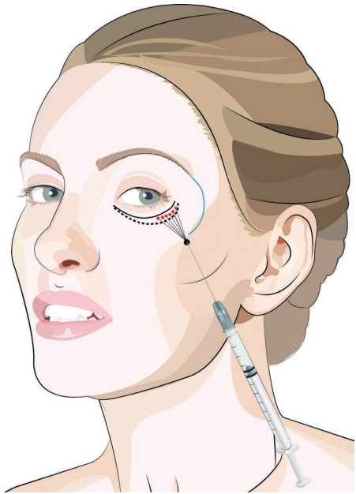
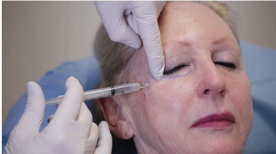
-
在眶下缘注射少量液体（每团注约 0.025–0.05 mL）。
-
部分后退套管针，重新推进至前一团注的紧邻位置，并再注射一小团。
-
不要过度矫正（图 16.6）。
-
根据需要用手动按摩向眼轮匝肌方向均匀推开。
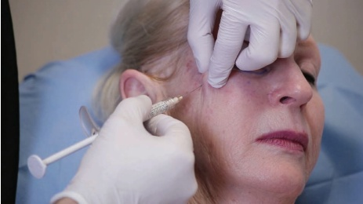
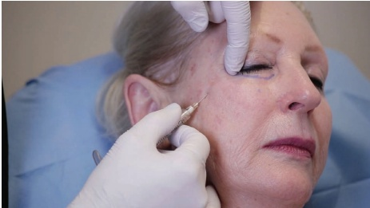
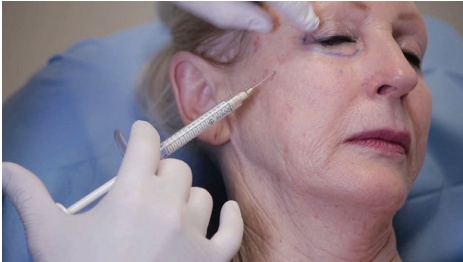
16.4 面颊沟套管针技术 2
注射定位，参见图 16.7。
16.4.1 分步技术
-
确定并标记眼轮匝肌皮肤嵌入点，并标记眶下缘。应显示该韧带的表层嵌入点低于骨性起点。
-
在眼轮匝肌肌肉皮肤嵌入点的外侧标记入点，使套管针能够到达面颊沟（PMG）而不会直接指向球体（图 16.8）。
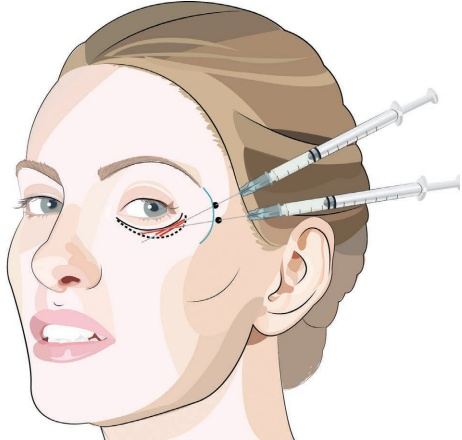
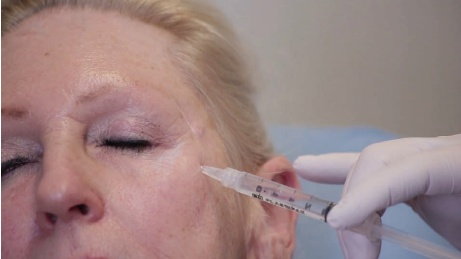
-
消毒。考虑行颧面神经阻滞和局部麻醉于进针点。
-
用 23G 针刺出预孔。
-
使用未稀释的 CaHA 或标准稀释的 CaHA（每 1.5 mL CaHA 配制 0.3 mL 含有 1% 利多卡因和肾上腺素 1:200000 的溶液）以及 25G、38 mm 套管针。
-
将套管针指向眶周筋膜沟（PMG）（图 16.9）。
-
用非惯用手抬起套管针尖前方的组织，并将套管针通过抵抗力物引导至骨膜层。由于外侧眼眶增厚是一个坚固的结构，高进针点可能更困难，因为需要一定的力量才能穿过这个韧带结构。
-
在骨膜上，用非惯用手指在眶环上缘引导套管针并滑动
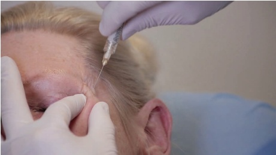
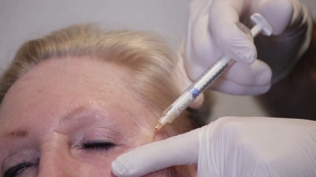
套管针沿内侧、位于眶下缘下方（图 16.10）。
-
小量注射并牵拉（约 0.1–0.2 mL 应足够）。
-
如有必要，从第二个进针点重复这些步骤，根据需要放置额外沉积物。
-
不要过度矫正。
-
根据需要进行手动按摩以使区域平滑。
16.5 眶颧沟（PALPEBROMALAR GROOVE）注射技术
有关注射定位，参见图 16.11。
16.5.1 分步技术
-
识别并标记眶环上缘（ORL）、眶下缘和颧面孔的皮肤附着点。注意这些韧带的表层附着点低于骨性起点。
-
标记区域（图 16.12）。
-
消毒。考虑行颧面神经阻滞。
-
使用未稀释的 CaHA 或标准稀释的 CaHA（每 1.5 mL CaHA 配制 0.3 mL 含有 1% 利多卡因和肾上腺素 1:200000 的溶液）以及配套产品的 27G 针。
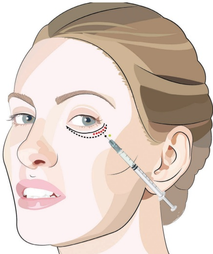
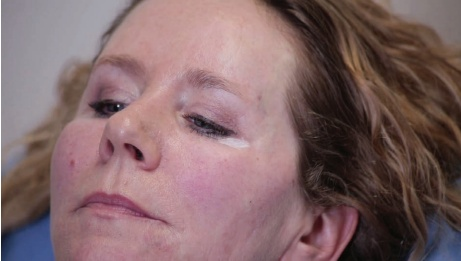
-
抬起颊部，用非惯用手的手指按压眶下缘，以避免无意中注射到眼眶内（图 16.13）。
-
选择距 PMG 向下约 1 cm 的皮肤进针点。
-
将针头斜面朝下，沿骨表面呈 45° 方向缓慢推进至骨膜层。
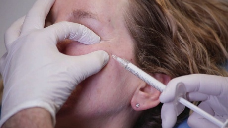
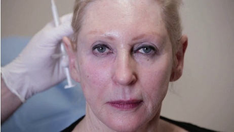
-
轻柔触碰骨膜，注射一系列小剂量，每剂约 0.025–0.05 mL。
-
如有必要，拔出针头，将针头重新插入更靠内侧的位置，并重复此步骤。
-
切勿过度矫正（图 16.13）。
-
根据需要进行手动按摩以使产品均匀分布。
有关术后效果和应用技术，请参阅图 16.14。
16.6 术后护理
如有必要，可对该区域进行手动按摩以使产品均匀。采用向上塑形的技术，产品可能会被推向更靠上方的区域。水肿可能不均匀，应在一天或两天内消退。
16.7 为达到最佳效果的附加治疗
在处理 PMG 之前，应考虑进行颊部丰容，因为将 CaHA 或其他填充剂深层注射到侧颊部可能会加重 PMG 的情况。为更自然、均匀地矫正眶下区域，可能还需要治疗泪沟。
参考文献
[1] D. K. Funt, “Avoiding malar edema during midface/cheek augmentation with dermal fillers,” J Clin Aesthet Dermatol, vol. 4, no. 12, p. 32, Dec. 2011.
[2] J. A. J. van Loghem et al., “Cannula versus sharp needle for placement of soft tissue fillers: An observational cadaver study,” Aesthet Surg J, vol. 38, no. 1, pp. 73–88, Dec. 2017.
[3] R. B. Shaw et al., “Aging of the facial skeleton: Aesthetic implications and rejuvenation strategies,” Plast Reconstr Surg, vol. 127, no. 1, pp. 374–383, 2011.